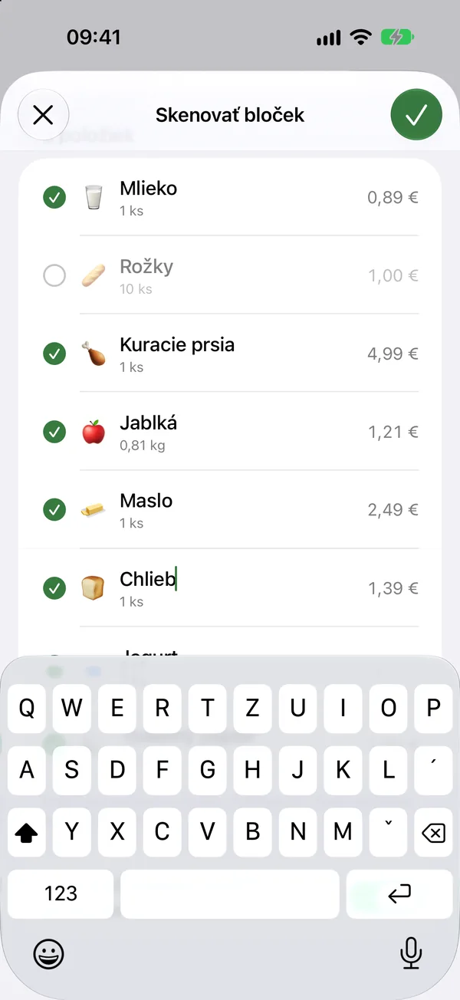

Čo robiť, keď sken bločku nerozpozná všetko
-
Krok 1 Opravte názov
Ťuknite na názov položky a prepíšte ho, napríklad skratku z bločku na Chlieb.

-
Krok 2 Vynechajte alebo zmeňte kategóriu
Zelené koliesko pri položke (Zahrnúť do nákupu) ju vynechá z nákupu. Ťuknutím na emoji zmeníte kategóriu, potiahnutím doľava položku zmažete.
-
Krok 3 Keď sa nenájde nič
Ak sa zobrazí Nenašli sa žiadne produkty, ťuknite na Skúsiť znova – celý bloček v zábere a na dobrom svetle. Chýbajúce položky pridáte do zoznamu ručne.
Časté otázky
Dá sa na výsledku zmeniť cena alebo množstvo?
V aktuálnej verzii nie – dá sa zmeniť názov, kategória a položku vynechať alebo zmazať.
Prečo Shoppie nerozpozná vyblednutý bloček?
Termopapier časom bledne. Bloček skenujte čo najskôr po nákupe.
Sken sa nespustí – čo s tým?
Povoľte prístup k fotoaparátu v Nastaveniach iPhonu → Shoppie → Fotoaparát.
Ďalšie otázky nájdete na stránke Podpora.